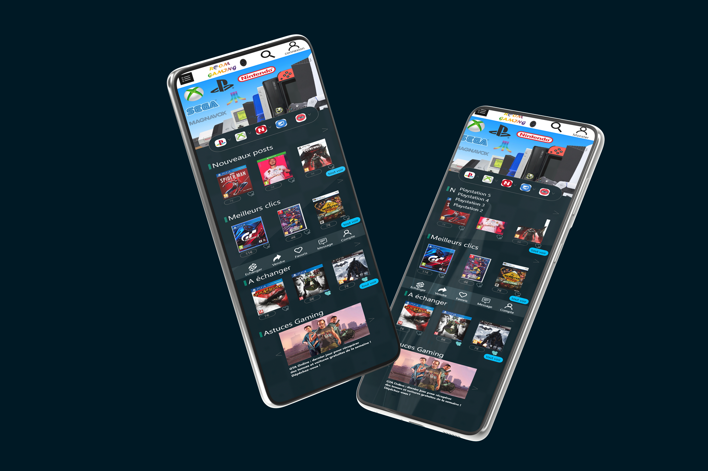

Case-study
Le TFA!
TFA! le travail de fin d'année, il fallait imaginer un service et formuler des hypothèses par rapport à la manière de l’aborder, également créer un prototype interactif (Adobe XD ou Figma) de ce service qui doit permettre de tester si les hypothèses sont bonnes ou fausses, confrontant des utilisateurs à tes interfaces, et apres établir des conclusions que je dois présenter devant les jury.
La problematique
Après avoir pris connaissance du briefing et l'étudier correctement, j’ai formulé mes hypothèse ( quel probleme je connais, quel solution pour resoudre le probleme) c'est ainsi que j’ai retenu la problématique de la revente et de l'échange de ces jeux vidéo inutil et en plus des rubriques qui captivent l’attention des utilisateurs et leur incitera à consulter l’application. j'ai etablir un formulaire pour verifier mon hypothèse

Le formulaire pour confirmer mon hypothèse
les premieres realisation
une fois mon hypothèse confirmé, j’ai commencé à imaginer l’application qui viendra résoudre ce probleme, les fonctionnalités, j’ai etablir les user journey, faire l’inventaire du design, des prototypes à l'aide d’adobe xd; ensuite réaliser un logo et choisir un slogan qui colle bien avec ma solution.
mockup-prototype
Le test utilisateur
Après cela j’ai effectué des tests utilisateurs sur mon premier prototype. j’ai beaucoup de retour qui ma permis d'améliorer mon prototype, déjà le logo de l’application a été modifié car il ne collait pas bien avec ma solution, ensuite j’ai revu le nom de l’application qui est passé de GO GAMING à ROMM GAMING, ce qui est plus adapté a ma solution proposé
La landing page!
fini les hypothèses et place et la réalisation technique! après avoir amélioré mes prototypes, j’ai élaboré mon plan de travail, et commencé à penser au code car c'était le moment de réaliser ma landing page, grâce au workflow mise à disposition par les professeurs, et la méthode gitup j’ai créer ma landing page.

La lading page
Les videos
pour mieux faire connaître mon application j’ai réalisé une vidéo publicitaire; et une autre vidéo pour présenter le deroulement de mon projet, cette étapes n’a pas été facile pour moi, déjà le matos, il fallait des outils adéquad mais grace a mes connaissance acquise j’ai du réaliser cette vidéo publicitaire et donc j’ai fait le montage sur premier pro d’adobe. cette vidéo d'à peine 2 minutes présente bien mon hypothèse et la solution que j'apporte.
video pour la publicité de l'application
video du déroulement du projet
Les contrainte et les acquis
la principale contrainte ici était le temps, le temps imparti pour la réalisation de ce projet était très peu, il fallait donc avoir un planning de travail rigoureux, ça n'a pas été facile, avec des heures de travail et beaucoup de difficultés rencontrée j’ai pu arrivé au bout, j’ai organisé mes slide pour une meilleur présentation devant le jury.
j’ai beaucoup appris durant ce projet de fin d’année , j’ai appris à travailler avec la pression du temps et à m'organiser pour la réalisation des tâches car il y avait quand même beaucoup à faire.
Mon pitch
Selon belgian game le marché du jeux vidéo en belgique est en plein croissance; il représente la deuxième industrie de divertissement, Cet engouement, conjugué à quelques années de baisse du pouvoir d'achat, témoigne de l'émergence d'un marché du jeu vidéo d'occasion. C'est sur ce constat assez clair que l’application Room Gaming voit le jour.
Conçue pour faciliter les échanges entre acheteurs et vendeurs de jeux d'occasion, Room Gaming est une plateforme en ligne qui au-delà du commerce offre d'autres rubriques comme astuce gaming; elle se veut simple, rapide et efficace. La vente, l'achat, l'échange et l’accès à ces différentes rubriques sont totalement gratuit, il suffit d’avoir un compte.
Ajouter un jeu à la plateforme prend à peine 30 secondes, pas besoin de prendre de photo, la plateforme interroge une base de donnée distincte pour avoir l’image qui correspond à votre jeu. La plateforme vous propose des prix de référence qui correspondent à votre jeu pour une meilleure vente. les echange de jeux se font sur base de souhait et vous ete averti par message lorsque sur lui ci est disponible, La vente et l'échange se font par communication directe entre les membres.
Malgré la réticence des constructeurs, la revente des jeux dématérialisés est aussi possible sur Room Gaming. La plateforme se veut un lieu privilégié des gamers et met à leurs dispositions des astuces gaming. Elle envisage pour devenir une plateforme incontournable des gamers de l’ajout de plusieurs autres fonctionnalités.
Pour se faire connaître nous tablons d’abord sur la publicité ainsi nous avons créé une vidéo publicitaire qui sera diffusée sur plusieurs autres plateformes et ensuite nous avons créé un site internet pour mieux présenter l’application et ou vous pourrez la télécharger gratuitement. l’application est aussi disponible sur playstore et appstore.
Alors téléchargez l’application, inscrivez vous et vendez vos jeux non utilisés et en acquérir d'autres à un prix très abordable et surtout consultez d'autres rubriques comme astuce gaming pour une meilleure expérience de jeu.